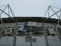

Easter 2003
We headed off to Hull for Easter weekend, and had a pleasant time fitting in some touristy stuff as well as some PC support. After we arrived, we headed off to the Humber Bridge to watch the sunset - I'd got my bearings wrong and so it set behind us - bah!
On Saturday, we headed off to the Hull City v Bournemouth match. This was our first trip to the new Kingston Communications Stadium, and we were all very impressed - a really well designed sports ground, and hopefully something that will help Hull to continue it's resurgence. So, the football was hardly in the same league as the Manchester United v Real Madrid match later in the week, but Hull won and that's all that really counts.
On Sunday we went over the Humber Bridge for a bit of an explore around Lincolnshire, an area that Richard hadn't been to before and that I hadn't been to for many years. It was a bit of a mystery tour as we just made it up according to what looked interesting on the map. We started off at Grimsby and had a quick look at the Docks before heading off to Waltham Mill. We then continued on our journey and stopped off at Covenham Reservoir which would have been lovely had their not been masses of midges. Our next stop was at Mablethorpe, where we briefly entertained ideas of visiting the Seal Sanctuary until we discovered it was closed already. Mablethorpe is lovely, a really nice looking long beach - perfect for kite buggying (we saw one guy doing just that) - and somewhere we might head off back to at some point. Our final stop was at the Claythorpe Watermill which seemed to be in really good condition.
(18 images.)
Back to index
Humber Bridge |
Tower at sunset |
Hull City 3 - Bournemouth 1 |
KC Stadium |

Front of KC Stadium |
Footballer |
Grimsby Docks |
Miniature steam train at Waltham Mill |
Another Miniature steam train |
Waltham Mill |
Waltham Mill |
Yellow |

Mum and Dad |
Fence at Mablethorpe |
Humber bridge from the other side |
Sun on River |

Abstract Tulip 1 |
Abstract Tulip 2 |
Back to index